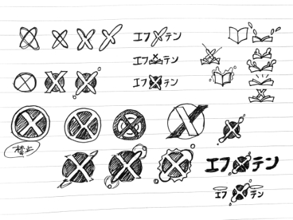

ロゴ制作ー エフテン －
-
使用目的・環境
使用目的：FXメディア情報サイトのロゴ
ターゲット：FXに少しでも興味がある全年代
イメージ：FXのイメージを排除した親しみやすいもの
制作時間：1週間
ツール：illustrator
制作に込めた想い
-
 FXが市民権を得始めた現在、年代問わず多くの方が目にするかもしれないので、あえてターゲットは絞り込まず、丸い字体で「親しみやすさ」を出しました。
かつ、FX＝怪しいという固定概念を拭うために明るい色合いのアイコンでクリーンさを表現しています。
ロゴをサイトに使用する上でファビコンにしやすいことも考慮し、エフ「テン」と「X」をかけてモチーフにすることでアイコンのみでも「エフテン」を連想できるように工夫いたしました。
こちらのロゴは社内のコンペティションにて選ばれ、現在実際に使用されています。
制作手順
-
① 手書きでのブレーンストーミング
メディアサイトということで当初からキャッチーなものをイメージしておりました。
文字から連想するものを書き出していきます。 -
② illustratorでの下書き
色を入れずにモノクロで作成します。
ラフを元に数個作成し、ターゲットを創造しながら適したイメージを絞り込んでいきます。 -
③ 色の調整
イメージカラーを決めます。
「クリーン」「全年代」といった言葉から連想される色を順に適用し、しっくりくる色を直観で選びました。 -
④ フィードバック・修正
Web制作会社にいた時期の制作物のため、先輩からのフィードバックをいただきます。
この時、「なぜこの形で、なぜこの色を選んだのか」といった感覚を言語化させることと、時間を置いて目をリセットさせることの大切さを学びました。 -
⑤ 提出
モノクロデータ、カラーデータ、白抜き、黒抜きを各種提出します。